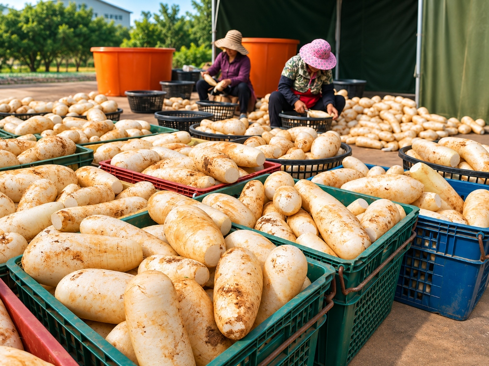
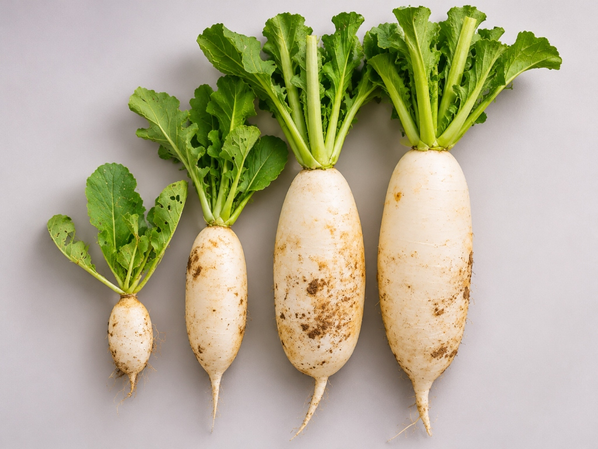
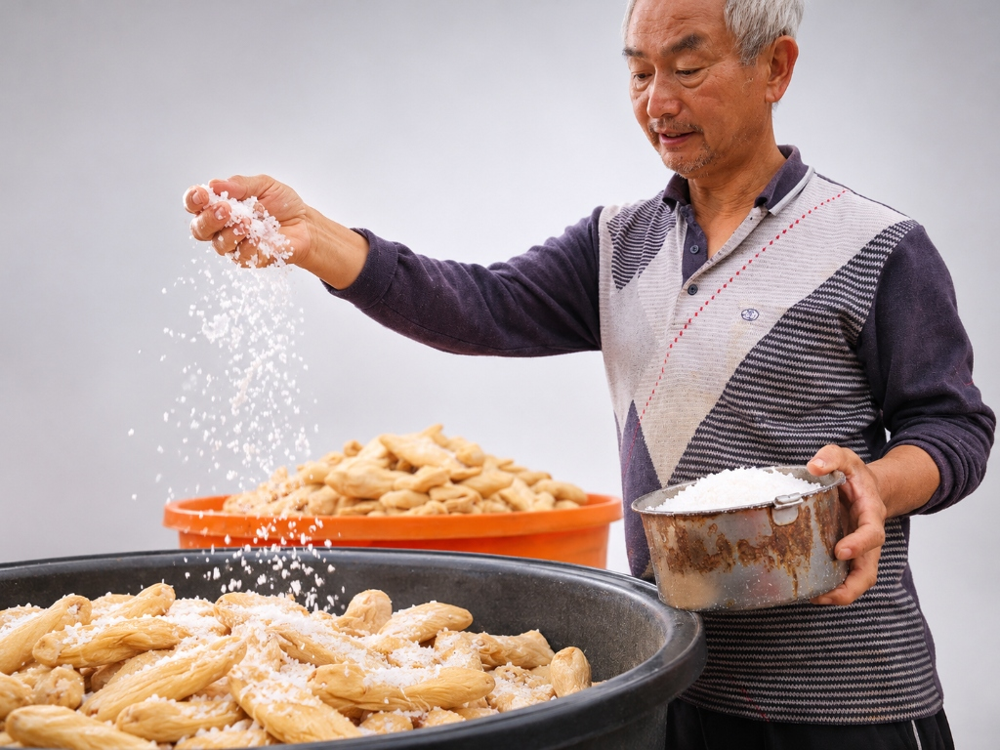
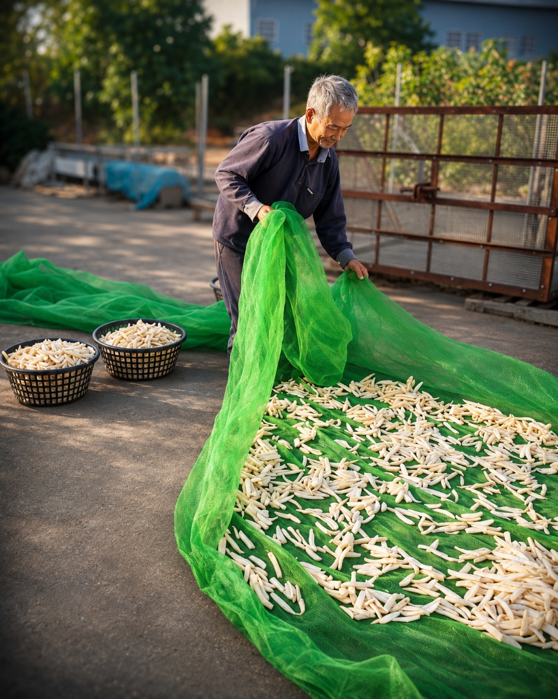
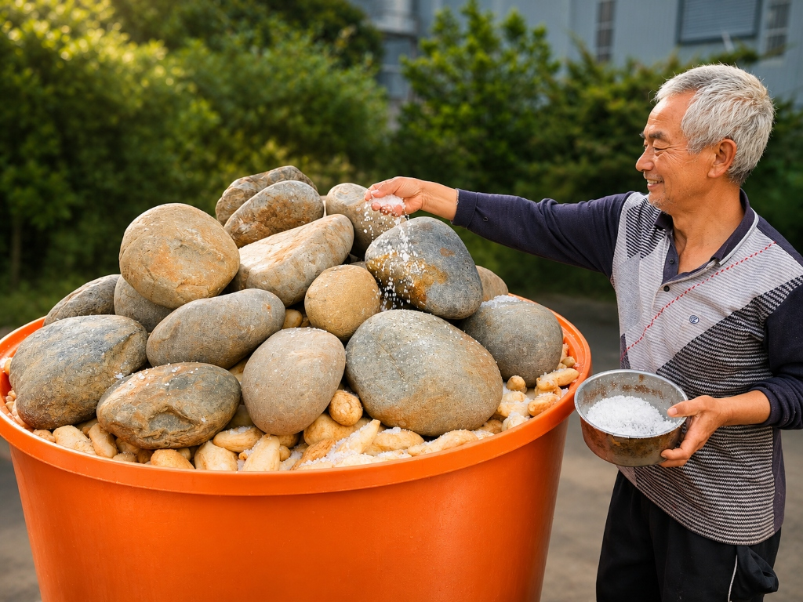
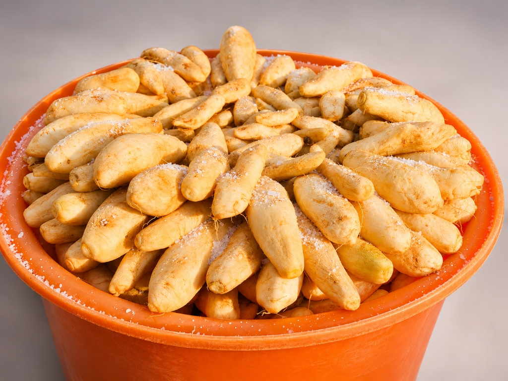

菜脯小故事
阿公阿嬤留在
菜脯埕上的小事

做菜脯做久了，手拿起刀就知道怎麼切，抬頭看天色就知道什麼時候該收。這些看起來很平常的小細節，就是老一輩一代一代傳下來的真功夫。
文化
菜脯到底是什麼飲食文化？
與其說菜脯是一種高深的「飲食文化」，不如說它是老一輩農村生活裡，最真實、最單純的一種「食物保存智慧」。
每年到了蘿蔔豐收的季節，田裡的蘿蔔一口氣拔起來，市場哪裡消化得了那麼大的產量？再加上有些蘿蔔長得歪七扭八、賣相不好，或是家裡根本吃不完，在沒有冰箱的年代，丟掉太心疼了。大家最自然、最不浪費的做法，就是抓一把粗鹽醃起來、拿到菜脯埕上曬太陽，慢慢做成能放好幾年的菜脯。這種「惜物、節儉」的農家心意，就是菜脯最早的起點。
隨著時代進步，物質豐富了，這股樸實的味道反而變成了無數人心中最懷念的家鄉味。雖然現代人講求少鹽健康，傳統醃漬物漸漸退出了很多家庭的餐桌，但我們依然堅持日曬手作——因為我們想守住的，不只是一甕菜脯，更是老一輩珍惜大地收穫的這份溫度與文化。

挑選
市場挑蘿蔔，越小真的越嫩嗎？
在市場賣菜時，常看到客人專挑個頭小的蘿蔔，說：「挑小一點比較嫩，大的太老了！」其實這真的是天大的誤會！
看旁邊這張照片——這四條蘿蔔來自同一塊地，是同時間撒種、幾乎同時發芽長出來的！也就是說，同一批採收的蘿蔔，大家「年紀其實完全一樣大」。
那為什麼有的長成大胖子、有的卻瘦瘦小小？關鍵全在「生長條件」：可能剛好這顆周圍空間太擠、泥土不夠鬆、沒澆到足夠的水、沒吃到肥料，或是旁邊長了一大叢雜草搶走了養分。小顆不等於嫩，很可能只是營養不良；大顆如果水分飽滿、表皮光滑沉重，反而清甜爽脆無渣！下次挑蘿蔔，記得別再只看大小囉！

手切
機器那麼快，阿婆為什麼堅持手切？
每一條蘿蔔長得不一樣，裡面的紋路也不同。阿婆切蘿蔔前一定先看紋理，再一刀一刀順著切。如果隨便亂切，剛切好時看著很大塊，曬乾縮水後就變得薄薄一片、毫無口感，嚼起來就少了那股爽脆的咬勁。
機器切雖然快，但切不出這個口感，所以到現在我們依然堅持一條一條手工切。
粗鹽
為什麼醃蘿蔔只用粗鹽，不用細鹽？
我們醃蘿蔔用的是大顆的天然粗鹽。因為粗鹽顆粒大、溶化得慢，蘿蔔裡的水分是慢慢被逼出來，而不是一下被抽乾。這樣醃出來的菜脯，才不會死鹹，還能保留蘿蔔原本的清甜和爽脆口感。
如果想要純靠風乾日曬、不加一粒鹽的蘿蔔絲，可以參考菜脯米的製作方法。

曬埕
曬菜脯底下鋪細紗網，是為了什麼？
走進我們的菜脯埕，會發現地上一片綠油油，蘿蔔全曬在細紗網上。這其實是老闆幾年前靈機一動的小發明！以前做菜脯，曬和收都是體力活大考驗：每天一早鋪開，每隔兩三個小時就要蹲著一條一條翻面；傍晚太陽剛下山就得趕快收，等全部撿完天都黑了，腰都快挺不直。
自從鋪了細紗網，底下空氣流通、透氣度大增，蘿蔔底部不會悶住水分，受熱更均勻，翻面次數直接少了一半！更神奇的是「收工的效率」——雙手抓起紗網兩端往中間一拉，成堆的菜脯一口氣全集中，直接倒進大桶就能推走，再也不用蹲在地上慢慢撿。
你可能很難想像，農村曬東西最怕碰上午後雷陣雨，雨滴落下的那幾分鐘根本是「跟老天搶時間」！鋪上紗網，三分鐘內就能把滿場菜脯搶收乾淨，這張網子真的是菜脯埕上的救命功臣！

壓甕
用了幾十年的大石頭
甕上面壓著的那幾顆大石頭，一用就是幾十年。把石頭壓在蘿蔔上，是為了把蘿蔔裡多餘的水分慢慢逼出來。長輩常笑著說，石頭用久了，上面早就住滿了專門醃菜脯的好菌，每一缸醃出來的香氣，才能一直這麼熟悉又對味。
一缸收完了，石頭洗乾淨收好，等明年冬天蘿蔔收成了，再搬出來繼續壓。看看條仔脯是怎麼壓甕的。

回缸
白天曬太陽，晚上為什麼要放回缸裡？
白天讓太陽把水分曬乾，天黑收工時，卻要把蘿蔔再排得整整齊齊放回甕裡，讓它把白天流出來的蘿蔔原汁慢慢吸回去。回缸時還會再額外添加少許粗鹽，讓鹹度與原汁再次滲透熟成。
很多人以為菜脯只要曬乾就能裝袋，其實沒那麼簡單，老一輩還要看它回缸吸了幾次汁、摸摸手感和重量才算合格。這樣「白天曬、晚上吸」，反覆幾次，蘿蔔原汁的甘甜和甕裡的香氣，才會完完全全鎖在菜脯裡面。

酸韻
菜脯帶有一點微酸，難道是壞掉了？
有時候吃到菜脯，會發現尾韻帶有一點點淡淡的微酸，很多人常疑惑是不是壞了？老闆笑著解釋：「放心！微酸是天然酵母發酵的味道，太酸才是不正常！」
不過，並不是每一批菜脯都會有明顯的酸韻。這完全看醃製當時的「天氣與空氣濕度」——曬製時如果空氣水氣稍高，酵母菌活動旺盛，微酸韻就會明顯一些；如果天氣乾燥、濕氣低，酸味可能淡到幾乎察覺不出來，這都是大自然發酵的正常現象。
傳統工廠因為沒有低溫冷藏，為了防霉常添加防腐劑（苯甲酸），結果把酵母菌也一併殺光，做出來的菜脯香氣大打折扣。菜脯埕引進了真空與冷藏設備，堅持【完全不加防腐劑】，才保留了酵母菌自然熟成的呼吸空間。這股天然發酵的韻味到了甕裡，一年後就會轉成沈穩的陳香，陳放十年以上更會化作迷人的梅干菜香，越陳越甘醇！
湯汁
菜脯摸起來濕濕的，是不夠乾嗎？
很多人打開包裝看到有湯汁，常以為是不是沒曬乾？其實台語說的「漬菜脯」，本來就是一種傳統醃漬的智慧。我們家一直照著祖傳、也是客家老一輩傳下來的做法，靠鹽與時間自然發酵。
就像所有美味的醃菜一樣，那層湯汁正是發酵出來的靈魂精華。菜脯吸飽了原汁，吃起來才甘醇多汁又有厚度；如果把水分榨得一滴不剩，那就只剩下乾硬的蘿蔔殼了！煮湯或炒菜時，連著這點精華湯汁一起下鍋，風味才會真正濃郁。
香氣
那股又愛又恨的菜脯香，到底哪來的？
菜脯的主角是白蘿蔔，它跟高麗菜、芥菜一樣都是十字花科植物，天生就帶有一種特殊的含硫物質。剛聞的時候，有些人可能會覺得有點嗆甚至臭臭的，但越聞卻越覺得有一種停不下來的魔力！
在長時間的醃漬和發酵過程中，這些物質會慢慢分解，跟甕裡自然產生的有機酸結合在一起，原本嗆鼻的味道轉化成了老菜脯特有的醇厚香氣——這就是大家記憶中那一股讓人聞了直流口水的傳統古早味。
陳放
老菜脯有乾有濕，差別在哪裡？
很多人逛市場會發現：怎麼有的老菜脯摸起來乾巴巴、表面還結一層白鹽霜，有的卻黑黑亮亮、帶著濕潤感？這其實是因為老一輩的「存甕方法」不同，主要分成「乾儲」跟「濕儲」兩種：
乾儲（耐放保險）：菜脯曬好後，再多曬幾天把水分降到最低，然後拌入大量的粗鹽封進甕裡。因為水氣極少又夠鹹，幾乎零失敗、不易發霉壞掉，拿出來時表面通常會有一層厚厚白白的鹽花。
濕儲（油亮多汁）：把蘿蔔自身壓出來的原汁留下來，讓菜脯一直泡在飽和的鹹原汁裡慢慢陳化。這樣陳年下來的菜脯不會縮得乾癟，表面會透出漂亮的黑色油光，吃起來口感軟嫩、香氣更厚。
各家有各家的祖傳手藝，也有人是一開始就把蘿蔔完全榨乾曬乾。做法不同，風味跟口感本來就不一樣，沒有絕對的好壞，純粹是看個人的口味喜好！
選甕
存老菜脯，選陶甕好還是玻璃甕？
祖傳古法確實都用大陶甕，但說句老實話，在現代居家保存，陶甕的失敗風險其實高很多！因為陶甕有較粗的毛細孔，台灣天氣一潮濕或是換季反潮，甕壁就容易「吊水」（水氣凝結滲進去），一不留神整甕就長霉壞掉了，非常可惜。
現在玻璃容器既便宜又密封。我們真心建議大家用「玻璃甕」來存老菜脯：
第一、玻璃不透氣孔、不吸濕氣，保存成功率極高；
第二、透明的甕身隨時看得清清楚楚，看著它一年一年從黃褐色變成烏黑黑金超有成就感，萬一真的有一點點發霉或變質，也能第一時間發現處理，不怕整甕悄悄壞掉。
存甕
醃老菜脯到底要不要倒甕？
常醃漬醬菜的朋友一定有個習慣動作——「倒甕」（把整甕倒過來倒扣放），為的是讓甕口最容易接觸空氣發霉的頂部，也能浸泡在濃鹹的湯汁裡，避免長霉。
但如果是醃老菜脯，千千萬萬別倒甕！老菜脯的陳化熟成極度依賴活跳跳的天然酵母菌，在發酵過程中，酵母菌會不斷呼出大量的二氧化碳氣體。這時候如果把甕倒過來放，裡面的氣壓會把飽和原汁強行從蓋口推擠出來，搞得整地黏膩外洩不說，還容易讓外面的壞菌趁隙跑進去！
其實防霉根本不需要倒甕，只要學會我們的農家絕招——「甕頂封鹽」：裝滿菜脯後，在最頂層均勻鋪上一層厚厚厚實實的粗鹽，就像一道天然的防護盾牌，既能完全隔絕上方空氣與雜菌，底下的酵母菌又能安心呼吸釋放氣體，乾淨、衛生又零失敗！
黑金
老菜脯越陳越黑、表面油亮，是抹油嗎？
完全沒有抹油！這全是大自然與時間送給老菜脯的禮物。白蘿蔔本身就含有天然的糖分和胺基酸，在甕裡陳放幾年甚至幾十年的歲月裡，這兩樣成分在常溫下慢慢結合、產生「梅納反應」（就像肉烤久了會變深焦香一樣）。
隨著時間過去，5年、10年、20年……菜脯會自然累積出一種叫類黑精的深色物質，顏色越變越黑，表面更會透出像黑金一樣漂亮的天然油光。這時候的老菜脯，不只黑得發亮，還會散發出一股濃濃的陳年醬香與甘甜回甘味。
翻曬
老菜脯真的需要「每年拿出來翻曬」嗎？
你一定聽過老一輩說：「老菜脯每年都要拿出來曬太陽！」很多人以為每年翻曬是為了讓風味升級，但其實這是一個美麗的誤會。
以前的保存環境差，陶甕容易反潮發霉，古早時候鹽巴又貴、捨不得加太多，菜脯放久了偶爾發霉是很常有的事。老人家每年把甕翻開，真正的目的是「抓壞掉」——把發霉變質的地方切掉，用煮沸放涼的濃鹽水洗一洗、殺菌，順便攤在太陽下曬乾水氣，再重新封回甕裡。這是一套不得不做的「搶救急救法」，而不是翻曬能讓菜脯變多香。
現在如果改用密封性好的玻璃甕，裝甕時最上面鋪上一層厚厚的粗鹽（甕頂封鹽），隔絕空氣與濕氣，只要擺在陰涼乾燥處，平時根本不需要每年費工翻曬，靜靜讓時間慢慢釀出黑金甘醇就好！
迷思
老菜脯真能治百病？打破神奇療效
民間常把老菜脯傳得神乎其神，說感冒、咳嗽、發燒只要泡一杯老菜脯茶喝就會好。但說實在的，這也是過去生活環境留下的一場「美麗誤會」。
在早期貧苦的農業時代，鄉下看醫生非常不方便，感冒發燒時，家裡隨手抓一塊老菜脯泡熱水喝，其實只是幫身體**補充了帶有鹽分、電解質與微量礦物質的溫開水**，讓脫水、虛弱的身體稍微舒緩了一些，並不是老菜脯真有什麼神奇的治病療效。現在醫療發達、診所到處都有，身體不舒服看醫生、按時吃藥才最快，千萬不要迷信偏方而耽誤了病情！
老實說，老菜脯光拿來泡熱水喝，鹹鹹澀澀的真的不太討喜；它真正的舞台是在餐桌上——丟進鍋裡切塊雞腿、切幾片薑，燉一鍋甘甜醇厚、熱騰騰的超三代老菜脯雞湯，這才是老菜脯最迷人、最讓人身心療癒的正確打開方式！